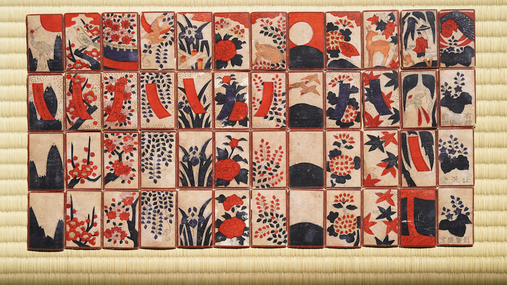
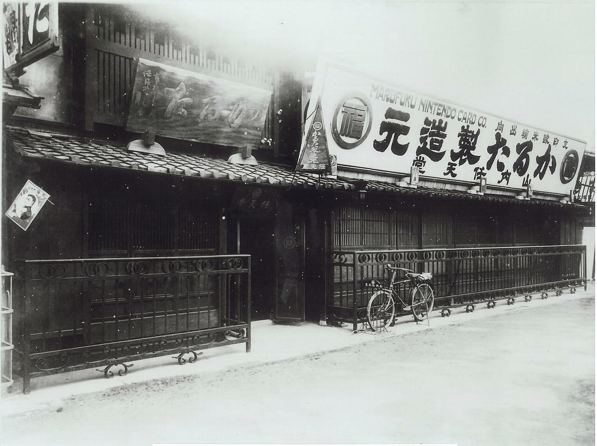

The Early Days of Nintendo
Founded in Kyoto, Japan, on September 23, 1889, by Fusajiro Yamauchi, the company initially had a very different focus. Nintendo started as a small playing card company known as "Nintendo Koppai," specializing in the production of handmade playing cards for a popular Japanese card game called Hanafuda.
Nintendo primarily specialized in producing Hanafuda cards. Hanafuda, which translates to "flower cards" in Japanese, is a traditional Japanese card game that uses a deck of 48 cards divided into 12 suits, each representing a month of the year. The suits are adorned with various floral and nature motifs, which give the cards their name. Nintendo's early success was rooted in the craftsmanship of its playing cards, which quickly gained a reputation for their quality. The cards featured beautiful hand-painted designs and were a hit in Japan. The company's success in the playing card business allowed it to establish a foothold in the market and lay the foundation for future endeavors.
In the 1950s, Nintendo underwent a series of transformations. Hiroshi Yamauchi, Fusajiro's grandson, took over as president and began diversifying the company's offerings. Nintendo ventured into various businesses, including taxi services and love hotels. However, these ventures were not particularly successful, and Hiroshi Yamauchi sought new avenues for growth.
